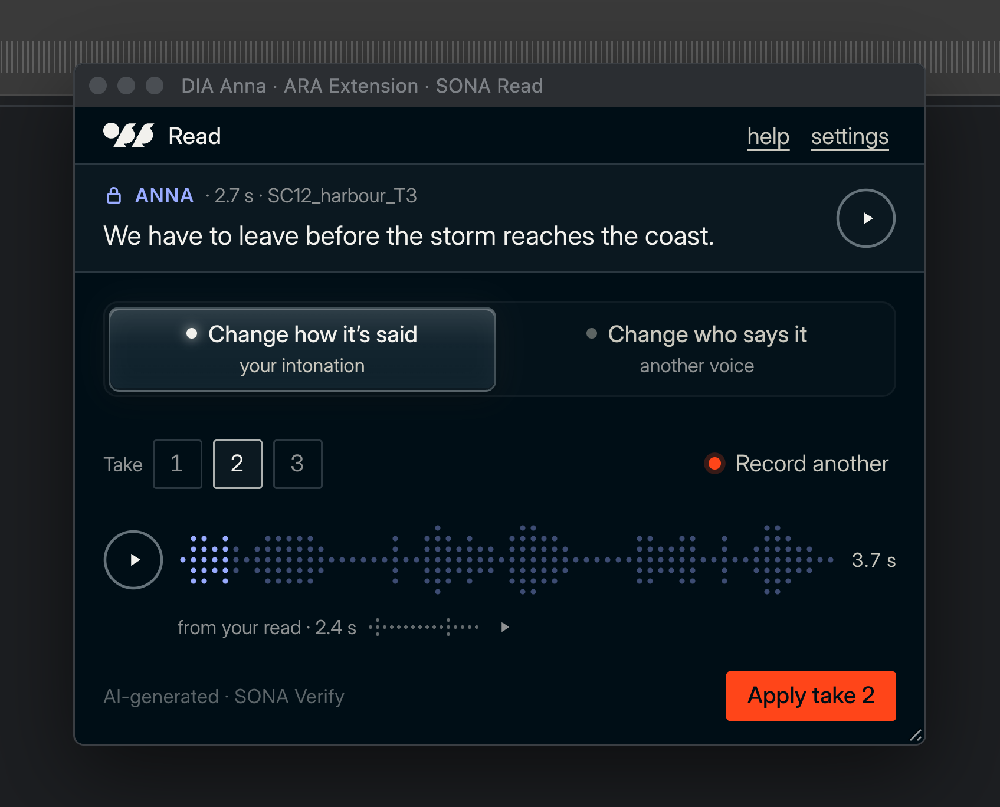
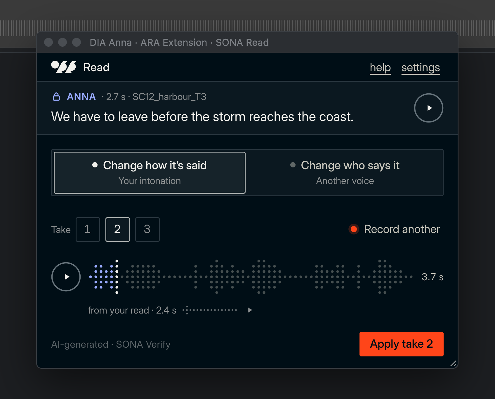

Brand check: before / after
Prototype v2 checked against the SONA Brand Guide 2026. Flat square boxes and two-tone dot waveforms, as in the brand’s UI pages.
Blue Moon#000e16 · background
Offwhite 12#f2f1ed · text, selection
Diaslide#c9c7bd · secondary, rest
Burn#ff4519 · actions, “!”
Sky#99abff · actor’s voice
01Flat toggle and two-tone dots
The toggle becomes a flat, square box: no glass, blur, sheen or glow, and the selection gets the same Offwhite frame as the selected take. The take waveform rests in Diaslide grey; only what has played turns Sky, like the brand’s player.

